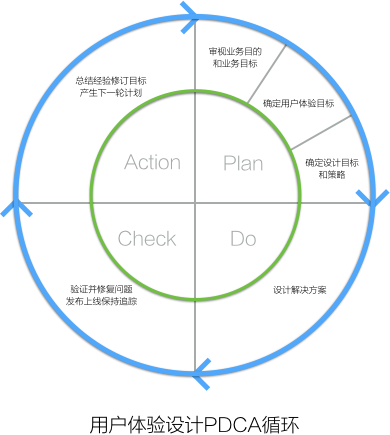

一边是产品的商业需求，它可以改善产品的市场表现，为企业带来利润。另一边是用户体验需求，它可以改善用户使用感受，提高用户满意度，使之获得更多的用户喜爱。产品经理和设计师经常会遇到这样两难的问题。 不可否认，所有的产品在它的生命周期内，都会遇到一系列破坏用户体验的商业需求。比如，设计师被产品经理要求在显眼的位置提供一个弹窗来通知用户，让用户去下载关联APP，通过这种强有力的方式来提高APP 的下载量…… 但我认为，破坏用户体验的最大原因并不是因为产品的商业化，而是因为产品的设计者缺乏对用户的了解导致的。比如提供非目标用户非当前场景所需要的功能，或是设计违反目标用户习惯的交互方式等等。 另外，破坏用户体验的需求，也往往起源于一个未经仔细思考的解决方案。难道不是吗？设计师们仔细想想，你是不是经常会接到一个解决方案，然后被称之为需求的。比如“需求说明：弹出一个对话窗口，让用户去下 载APP”。 这不能怪谁。因为人们天性习惯于描述解决方案，而不是先说明为什么以及想要的结果。 不同等级的设计师，面对“弹出一个对话窗口，让用户去下载APP”的需求，会有不同的处理方式： 设计师等级一：设计了一个弹出窗口让用户方便点击下载按钮。 设计师等级二：设计了一个弹出窗口，并使用更打动人心的词藻和图形来吸引用户点击下载按钮。 设计师等级三：了解为什么要使用弹窗的方式中断用户的流程，并要求用户下载APP的业务动机。通过用户研究了解到用户的使用场景，设计了一个自动同步到APP的功能，并提示用户可以在下班途中用手机打开APP 接着看后面的内容。通过场景的补充来帮助用户，同时又提高了APP的下载量。 其实，举例提到的所谓的需求（“需求说明：弹出一个对话窗口，让用户去下载APP”），是一种构想的解决方案草案，它是手段，不是目标。可惜的是，大多数初级设计师会把手段当作目标，然后开始设计一个可能完 全不能解决问题，并且影响用户使用感受的解决方案。 想想，如果我们不了解用户的使用场景、需求和痛点，弹再多、再大的窗口，使用再打动人心的词藻，能吸引用户去下载APP吗？ 相反，像等级三的设计师那样，通过对商业需求（有时也称为业务需求）的了解，以及对用户需求和使用场景的分析，最终并没有采用弹窗这种被大家认为“破坏用户体验”的手段，也提高了APP的下载转化率。用户 没有受到打扰，并且又愉快地下载了APP，用户体验目标和产品的商业目标得到平衡，皆大欢喜。 设计师最忌接到需求后不先去分析相关的目的和目标，直接开干。每一个用户体验设计项目都是一个PDCA（Plan -> Do -> Check -> Action）循环。我们在接到需求的时候，需要从审视目的目标开始，一步一步 去分析，形成一个完整的计划才开始着手解决方案的细节。 如果团队成员相互不认可，对于用户目标和产品目标的理解又不一致，设计师埋怨产品经理的“需求”破坏了用户体验，产品经理埋怨设计师的解决方案差劲，导致KPI没有完成。在这样的环境下，别说用户体验了，就 连我们自己的工作体验都不会好。  产品的商业化，在某种程度上的确是会破坏用户体验。反过来，无尽的用户体验需求，也会在某种程度上影响产品的健康发展。我们的工作，如果只纠结于用户体验而忽略产品的商业目标，是毫无意义的。一个产品想要 成功，除了需要提供良好的用户体验，还需要正确的商业模式以及营销方式。设计好的用户体验是实现产品成功的有效手段。但如果把手段当然目标，是非常不成熟的表现。 把用户体验做到极致，是我们常常听到的一句话，有的人也奉之为准则。但物极必反，极致的用户体验意味着需要付出更高的成本，我们需要平衡。只有用户的利益和企业的利益彼此平衡、共同发展，对两者才是最好的。
COPYRIGHT (©) 2016 郑哲辉 NOTWOWAIT.